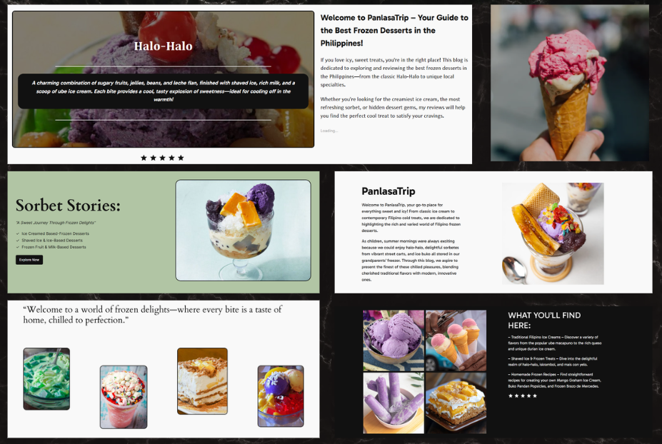

PanlasaTrip: A Modern WordPress Food Blog
PanlasaTrip is a WordPress-based blog platform dedicated to exploring and showcasing traditional Filipino frozen desserts.
The website provides curated articles, detailed recipe guides, and cultural insights into popular treats such as Halo-Halo, Buko Pandan, and Leche Flan Ice Cream.
Built using the WordPress Content Management System (CMS), the platform allows efficient content organization, category management, and user interaction through comments.
The design focuses on clean layout structure, strong visual storytelling, and an engaging reading experience.
3
Total Technologies
5
Main Features
Technologies Used

Key Features
- Built using WordPress for efficient content management and publishing.
- Organized articles with titles, dates, author details, and categories.
- Structured formatting for ingredients, instructions, and variations.
- Posts grouped under dessert types for easier navigation.
- Allows user interaction and engagement on each article.